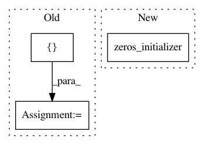

bf6414d298d29c12913cf5c83a0277e1db63e6d6,finetune/nn/auxiliary.py,,embed_context,#Any#Any#Any#Any#,6
Before Change
context_weighted_avg = tf.get_variable(
name="cwa",
shape=[context_dim],
initializer=tf.random_normal_initializer(stddev=config.weight_stddev),
)
if config.train_embeddings:
context_embed_weights = dropout(
context_embed_weights, config.embed_p_drop, train
)
context_weighted_avg = dropout(context_weighted_avg, config.embed_p_drop, train)
else:
context_embed_weights = tf.stop_gradient(context_embed_weights)
with tf.variable_scope("context_embedding"):
weighted_C = tf.multiply(
context, context_weighted_avg
) // [batch_size, seq_length, context_dim] * [context_dim] = [batch_size, seq_length, context_dim], with weighted inputs
c_embed = tf.tensordot(
weighted_C, context_embed_weights, axes=[[2], [0]]
) // [batch_size, seq_length, context_dim] * [context_dim, n_embed] = [batch_size, seq_length, n_embed]
c_embed = norm(c_embed, tf.get_variable_scope())
// c_embed = tf.reduce_mean(c_embed, axis=1)
featurizer_state["context"] = c_embed
return featurizer_state
After Change
context_bias = tf.get_variable(
name="ca",
shape=[config.n_context_embed],
initializer=tf.zeros_initializer(),
)
with tf.variable_scope("context_embedding"):
c_embed = tf.add(tf.multiply(context, context_weight), context_bias)
In pattern: SUPERPATTERN
Frequency: 3
Non-data size: 3
Instances
Project Name: IndicoDataSolutions/finetune
Commit Name: bf6414d298d29c12913cf5c83a0277e1db63e6d6
Time: 2020-01-10
Author: lily.zhang@indico.io
File Name: finetune/nn/auxiliary.py
Class Name:
Method Name: embed_context
Project Name: arnomoonens/yarll
Commit Name: 7041289333eb7865e7c0494592c0c02afb53e7d2
Time: 2017-03-27
Author: x-006@hotmail.com
File Name: REINFORCE.py
Class Name: REINFORCELearnerDiscrete
Method Name: build_network_rnn
Project Name: arnomoonens/yarll
Commit Name: 0a1844fe38592ba9797e37c920d6a9f745f217c0
Time: 2017-03-30
Author: x-006@hotmail.com
File Name: async_knowledge_transfer.py
Class Name: AsyncKnowledgeTransferLearner
Method Name: build_networks